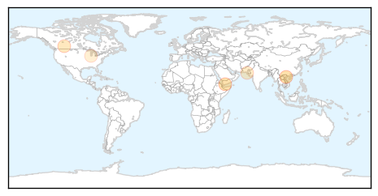
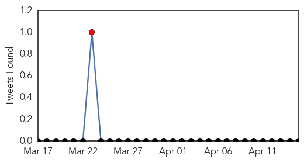

Measles
30-Day Web Trend
1 alerts, 6 warnings

30-Day Twitter Trend
0 alerts, 0 warnings

Article Locations
Article Confidences

Top Articles:
- 0.973
- 25 children die of measles; Vietnam experts suggest declaring epidemic
- 0.956
- WHO country office representative talks to the Yemen Times
- 0.760
- Measles confirmed at two more Calgary schools
- 0.656
- seven die as contaminated water ignites measles outbreak
- 0.533
- Mom Whose Child Died After Catching Chicken Pox Advocates for Vaccines
Top Tweets:
-
No tweets found for Apr 15, 2014
Hemmorhagic Fever
30-Day Web Trend
16 alerts, 0 warnings
30-Day Twitter Trend
2 alerts, 0 warnings

Article Locations

Article Confidences

Top Articles:
-
No articles found for Apr 15, 2014
Top Tweets:
-
No tweets found for Apr 15, 2014